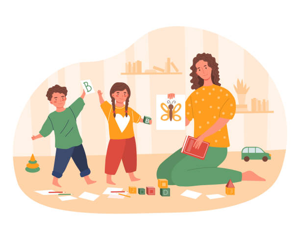
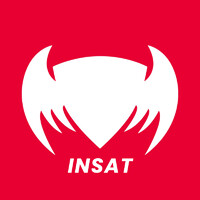
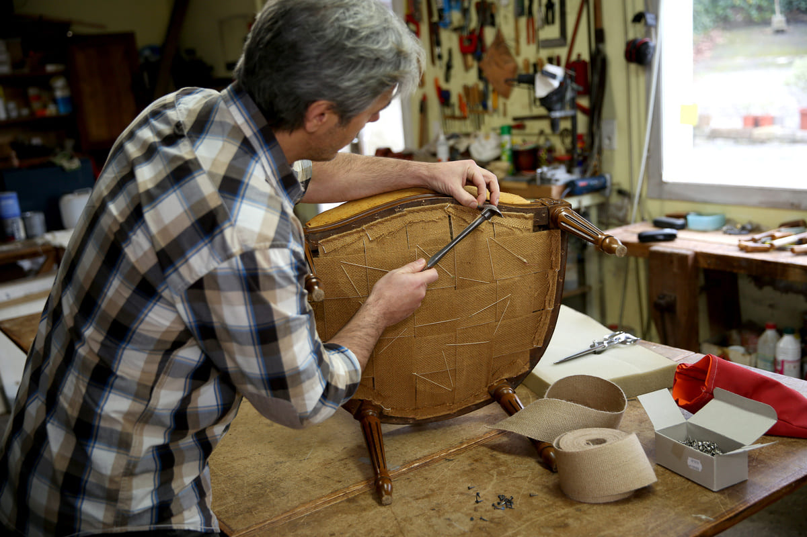
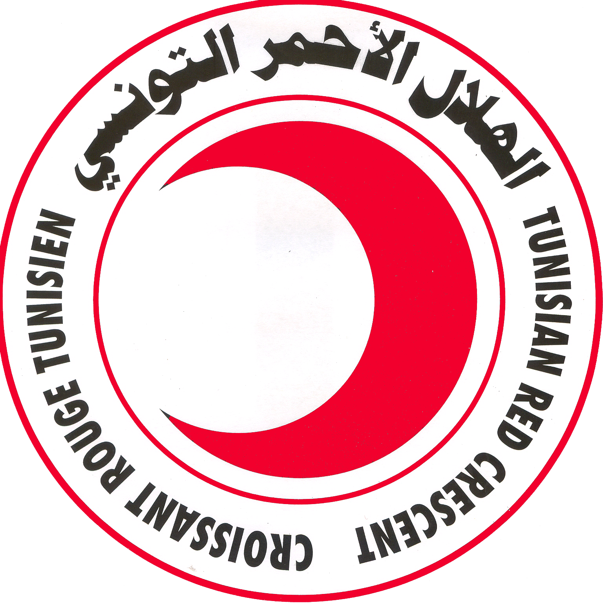

Babysitter
Famille privée | Saint-Ouen, France | 08/2023- 12/2023
Responsabilités :
- Prendre soin d'un enfant de 2 ans, y compris la préparation des repas, l'assistance aux toilettes et la participation à des activités calmes.
- Aider au bain, à l'habillage et aux routines du coucher.

Securinets
Association INSAT | Tunis, Tunisie | 2022- 2023
Responsabilités :
- Participation à des ateliers et événements axés sur la cybersécurité.
- Exploration de divers aspects de la sécurité Web, de la criminalistique numérique et du piratage éthique.
- Renforcement de la compréhension des vulnérabilités client-serveur, des requêtes HTTP et des systèmes de noms de domaine.

Aide tapissier
Atelier tapissier local | Djerba | 07/2022- 09/2022
Responsabilités :
- Contribuer aux diverses tâches liées à la rénovation et à la création de meubles tapissés.
- Assurer le bon fonctionnement de l'atelier en maintenant un espace de travail propre et organisé.
- Fournir un service client en accueillant et en assistant les clients dans leurs demandes et besoins.

Bénévolat
Croissant Rouge Tunisien | Djerba, Tunisie | 08/2020- 09/2020
Responsabilités :
- Participation à l'organisation de campagnes de vaccination pendant la pandémie de COVID-19.
- Accompagnement et sensibilisation des personnes âgées à la vaccination contre le COVID-19.
- Assistance aux personnes analphabètes ou inexpérimentées en informatique pour s'inscrire à la vaccination via le système en ligne.

Scoutisme
Scout Medenine | Djerba, Tunisie | 2013 - 2020
Responsabilités :
- Développement de compétences en leadership grâce à diverses activités et projets de scoutisme.
- Renforcement des compétences de survie en plein air et du développement personnel.
- Participation à des activités de service communautaire et de responsabilité sociale.